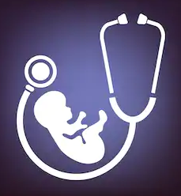

LifeCare Hospital
>>Department of Gaenaecology<< ">
Introduction:
The Department of Obstetrics and Gynaecology offers comprehensive services for the reproductive health
and gynaecological needs of women. It has one of the highest workloads in the entirecountry and
admission into the residency training programme is high coveted. Being a tertiary care centre,
patients are referred from all over with a fascinating array of obstetric and gynaecological conditions.
Every year, approximately 23,000 new patients attend the outpatient department.
There are 13,000 inpatients and 5000 surgeries.
Annually, over 8000 women deliver in this centre.
Large proportions of
these women have some high risk factor complicating pregnancy. Critical
care
and medical disorders in obstetrics are areas of special focus.
Babies requiring intensive care are
transferred to an excellent
Neonatal Intensive Care Unit. Complete contraceptive services and
facilities for medical termination of pregnancy are also available.
Microsurgery, endoscopy and oncological surgeries are
performed routinely. The department is one
of only three centres recognised by the Government of Maharashtra for training in
laparoscopic sterilization.
Information for Patients:
The Department runs daily outpatient clinics for gynaecological
patients in the morning and obstetric patients in the afternoon.
New
registration papers are issued between 8.00am and 10.30 a.m. and 12.30
noon and 2.00 p.m. Emergency care is available
all day and night.The
Gynecology Outpatient Clinic is held every day from 8.30 a.m. and 12.30
p.m. in Clinic No. 109.
The case papers are available only between 8.30
a.m. and 10.30 a.m. The following services are offered at this clinic-
1.Pap smear for screening of the genital tract cancer.
2.Endometrial aspiration cytology for screening for uterine cancer.
3.Gynecologic examination.
4.Counseling.
5.Colposcopy.
The
Infertility Outpatient Clinic is held every day from 10.30 a.m. and
12.30 p.m. in Clinic No. 109A. Patients referred to this
clinic from
the Gynecology clinic can attend it on any day other than Sunday. The
following services are offered at this clinic-
1.Ovulation study.
2.Cervical mucus study.
3.Postcoital test.
4.Sperm washing.
5.Intrauterine insemination.
The Obstetric
Outpatient Clinic is held every day from 1.30 a.m. and 4.00 p.m. in
Clinic No. 109. The case papers are available
only between 12.30 p.m.
and 3.00 p.m. The following services are offered at this clinic-
1.Antenatal
care.
2.Pap
smear for screening of the genital tract cancer during pregnancy.
3.Blood
testing for hemoglobin, blood group, VDRL, and HIV after counseling.
4.Colposcopy.
A brief Introduction of Head Department of Gaenaecology-
NAME: DR. P.SAI PRIYA||E-mail:aiimspsp@yahoo.com
Area of Interest :Vitiligo, Psoriasis, alopecia, contact dermatitis, drug eruptions
Qualifications and Fellowship-
MD Dermatology and Venereology, AIIMS, New Delhi, May 1982
One year “Leprosy Research Fellowship” 1992-93
Fellow National Academy of Medical Sciences (FAMS)
Fellow Royal College of Physicians (FRCP) London
International Member American Academy of Dermatology
Member European Academy of Dermatology and Venereology